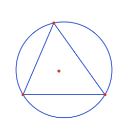
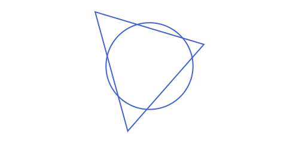

Drawing with Luxor.jl
Everything on this page comes from a package extension, not from Apollonius.jl itself. The package never depends on Luxor.jl; path has no methods at all until your own code also loads Luxor. Everything described on the rest of this site (points, lines, circles, triangles, conics, tangency, affine maps...) is unaffected either way.
This page is not a Luxor tutorial. For Drawing, sethue, colors, fonts and everything else that belongs to Luxor itself, read Luxor's own documentation. What follows is just what this package adds on top: the path function and the @prepare_to_picture macro. Read the next three sections in order to get going; the rest of the page is reference material for later.
Activating it
Julia's package-extension mechanism ([weakdeps]/[extensions] in Project.toml, available since Julia 1.9) is what makes this possible: path is declared in Apollonius.jl but given no methods there. The moment your own session also has Luxor loaded, those methods materialize automatically, no configuration needed on your part beyond loading both packages:
using Apollonius, Luxor
t = APTriangle(APPoint(-80.0, 60.0), APPoint(80.0, 60.0), APPoint(-20.0, -80.0))
Drawing(250, 250, "triangle.png")
origin()
background("white")
sethue(Luxor.julia_blue)
path([t, circumcircle(t)]; action=:stroke)
sethue(Luxor.julia_red)
path([incenter(t), vertices(t)...], action=:fill)
finish()
preview()
If you only ever using Apollonius and never load Luxor, path simply doesn't exist as a callable function (methods(path) is empty). There is no partial/broken state to worry about.
path is deliberately thin
path(obj; action=:path, kwargs...) only ever does one thing: it adds obj to Luxor's current path, using Luxor's own primitives underneath (Luxor.circle, Luxor.line, Luxor.poly, Luxor.arc2r, ...). It never calls sethue, never sets an opacity, and never draws a label; those are already exactly what Luxor's own sethue, setopacity and label do well, and giving path its own parallel vocabulary for them would just be a second thing to learn for no benefit. Every example on this page is path(...) interleaved with plain Luxor calls, the same way you'd combine any two of Luxor's own shape functions.
The one keyword every method shares is action, forwarded straight to Luxor exactly the way Luxor's own shape functions (circle, poly, ...) take it:
:path(the default): add to the current path and do nothing else. Use this when you're about to style it yourself (Luxor.strokepath(),Luxor.fillpath(),Luxor.clip(), or add more shapes to the same path first) or when you're going to reuse the same call with several actions.:stroke,:fill,:fillstroke: build the path and render it immediately, the one-call convenience.:fillpreserve,:strokepreserve: render it and keep the path, so the next call can use it again: the way to fill and stroke the same shape with two colors, without building it twice (see below).:clip: use the path as the clip region, see Clipping the outside.
sethue("steelblue")
path(t; action=:stroke) # outline only, one call
path(t) # action=:path: just builds the path...
Luxor.strokepath() # ...you render it, same effectFor a translucent fill underneath a solid outline (a common combination that used to be its own fillcolor keyword on this page in an earlier version of this interface), just do what you'd do with any Luxor shape: build the path once, fill it, then stroke a fresh copy:
sethue("steelblue"); setopacity(0.15)
path(t; action=:fill)
sethue("steelblue"); setopacity(1.0)
path(t; action=:stroke)Or keep the path after the fill, so the outline needs no second call to path:
sethue("steelblue"); setopacity(0.15)
path(t; action=:fillpreserve) # fills and keeps the path
sethue("steelblue"); setopacity(1.0)
Luxor.strokepath() # strokes the same path and clears itA preserved path stays until something renders it or Luxor.newpath() clears it. Any action other than :path starts a new path for the shape it is given, so a second path(obj; action=...) replaces it. To preserve several shapes together, give them as a vector: path([a, b, c]; action=:fillpreserve) adds all of them to one path, fills it once and keeps it.
And for a label, Luxor.label (or plain Luxor.text) at whatever anchor point makes sense for that shape, which is almost always a point the package already gives you a name for, so there's nothing to look up. Luxor.label accepts an APPoint directly (both the alignment-Symbol form and the direction-angle one), no Luxor.Point(p...) conversion needed, and so does Luxor.text, which also turns the text, with angle or direction, a number or a vector:
Luxor.label("I", :N, incenter(t))
Luxor.label("O", :N, circumcenter(t))
side = APSegment(t[2], t[3])
Luxor.text("a", midpoint(side); halign=:center, direction=side, upright=true) # along the sideSizing a canvas automatically
Setting up a Drawing normally means guessing values by hand: how wide and tall does the canvas need to be, how far do the shapes need to shift so nothing ends up off-canvas, how much breathing room to leave around the edges? @prepare_to_picture (from the core package; see Macros: Sizing a Picture for the full option reference) answers all of that in one call: it translates and uniformly scales a whole set of shapes so they fit centered on (0, 0), and hands back the exact canvas size directly. Centering on (0, 0) matches Luxor's own origin() convention, so the result is ready to draw right after origin(), which @png already calls for you:
The macro returns two NamedTuples, and this documentation always calls them lxm (the "Luxor meta": the canvas size, the fitting function fct and the drawable area bb) and lxo (the "Luxor objects": everything the block built, already fitted, under the names it was given):
using Apollonius, Luxor
lxm, lxo = @prepare_to_picture width=300.0 margin=10.0 begin
t = APTriangle(APPoint(2.0, -5.0), APPoint(9.0, 3.0), APPoint(-1.0, 6.0))
circ = APCircle2(APPoint(4.0, 1.0), 4.0)
end
# (lxm.width, lxm.height) = (300.0, 328.0): exactly 300 wide (as requested), tall enough
# to keep t/circ's own aspect ratio, plus a 10-unit margin on every side
@png begin
sethue("steelblue")
path(lxo.t; action=:stroke)
path(lxo.circ; action=:stroke)
end lxm.width lxm.height
Building the Drawing by hand instead needs its own origin() call first, since Drawing itself doesn't move (0, 0):
Drawing(lxm.width, lxm.height, "figure.png")
origin()
background("white")
sethue("steelblue")
path(lxo.t; action=:stroke)
path(lxo.circ; action=:stroke)
finish()t/circ inside the block are ordinary variables and stay as they were: the fitted copies are in lxo. To bring them into scope under their own names, (; t, circ) = lxo. @prepare_to_picture! is the mutating form, which rebinds the names in place instead.
When the requested width/height don't match the content's own aspect ratio, the content is scaled (still uniformly; a circle never becomes an ellipse) to fit inside both, and centered, leaving extra blank space beyond margin on whichever axis has slack: the same "contain fit" a CSS object-fit: contain or an image viewer's "fit to window" would give:
lxm, lxo = @prepare_to_picture width=400.0 height=200.0 margin=10.0 begin
t = APTriangle(APPoint(2.0, -5.0), APPoint(9.0, 3.0), APPoint(-1.0, 6.0))
circ = APCircle2(APPoint(4.0, 1.0), 4.0)
end
Drawing(lxm.width, lxm.height, "figure_wide.png")
origin()
background("white")
sethue("steelblue")
path(lxo.t; action=:stroke)
path(lxo.circ; action=:stroke)
finish()As an additional comment, every illustration under docs/illustrations/ shares the same Luxor imports and Drawing/finish/preview boilerplate, factored out once into docs/illustrations/default_config.jl (a shared include) and its @svg_doc macro. docs/illustrations/template.jl is the copy-paste starting point for a new one: copy it into the right subfolder (triangles/, circles/, ...) and fill in the two blanks:
include("../default_config.jl")
lxm, lxo = @prepare_to_picture width=500 height=240 margin=20 begin
# build the objects: name = APObject(...)
end
# bring them into scope: (; name1, name2) = lxo
@svg_doc(lxm, @__FILE__, begin
# plot the objects
end)@svg_doc derives both the output filename and its subfolder under docs/src/assets/img/ from @__FILE__, which is why it has to be passed in literally at the call site (a macro can never recover its caller's file on its own, only its own defining file), rather than typed as a fmt_name/path computation in every single illustration file by hand.
Excluding a shape from sizing: @unbounded
Every shape named in a @prepare_to_picture block counts toward the canvas's size and scale, including a large auxiliary shape you built only to construct something else, and never meant to set the picture's own scale. @unbounded marks one line as exempt from that sizing, without changing anything else about it: it still binds/translates/scales along with everything else, only its own APBoundingBox is left out of the union that decides how far to zoom out:
lxm, lxo = @prepare_to_picture width=500.0 height=240.0 margin=20.0 begin
A = APPoint(1.0, 1.0)
@unbounded locus = APCircle2(APPoint(0.0, 0.0), 1000.0) # huge, but not the picture's scale
B = intersection(locus, APLine(A, APPoint(2.0, 2.0)))[1]
end
# sized by A/B alone (locus's radius-1000 bounding box never counts):
# without @unbounded here, A/B would shrink to a speck next to it instead
lxo.A, lxo.locus, lxo.BWrap either the whole line (@unbounded locus = APCircle2(...)) or just the right-hand side (locus = @unbounded APCircle2(...)), both read the same way. The object is still in lxo, fitted like the rest. Outside a picture block, @unbounded expr is simply expr, a harmless no-op, so it's always safe to leave in place regardless of context.
A common case: a triangle's circumcircle is usually much bigger than the triangle itself, and would dominate the sizing if it were fitted like an ordinary shape. Marking it @unbounded keeps the picture scaled to the triangle instead:
lxm, lxo = @prepare_to_picture width=500 height=240 margin=20 begin
t = APTriangle(APPoint(0.0, 0.0), APPoint(10.0, 0.0), APPoint(7.0, 5.0))
@unbounded cc = circumcircle(t) # sized by t alone, not by cc's larger radius
endSee Triangles: The Classical Centers for a full worked figure of a triangle with its circumcircle, incircle and Euler line together.
If everything in the block has zero size, a single point for example, and width or height is given, the scale would be infinite and the macro throws an ArgumentError. Add another object, or drop width and height.
Applying the same transform outside the block: lxm.fct
Both macros' returned size NamedTuple also carries fct: the exact same translate + homothety + (if flip) reflection pipeline applied to every shape in the block, as a plain function, so it can be applied to something that was never one of the block's own shapes and still land in the same transformed coordinate space (a label position computed after the fact, a point from unrelated data, ...):
lxm, lxo = @prepare_to_picture width=300.0 margin=10.0 begin
t = APTriangle(APPoint(2.0, -5.0), APPoint(9.0, 3.0), APPoint(-1.0, 6.0))
circ = APCircle2(APPoint(4.0, 1.0), 4.0)
cp = centroid(t)
end
lxm.fct(centroid(t)) ≈ cp # trueThe drawable area itself: lxm.bb
Both macros' returned size NamedTuple also carries bb: the APBoundingBox of the canvas's own drawable area, centered on the origin the same way origin() centers it, with margin already subtracted from every side. It depends only on width/height/margin, never on the block's own shapes, so it's there even when nothing in the block reaches anywhere near the canvas edges.
The typical use is clipping: something that legitimately extends past the canvas on purpose, most often an unbounded region or a large auxiliary shape marked @unbounded, can be clipped to lxm.bb before stroking or filling it, instead of letting Cairo render (and spend time on) geometry that falls outside the printable area anyway:
lxm, lxo = @prepare_to_picture width=300.0 height=200.0 margin=10.0 begin
t = APTriangle(APPoint(2.0, -5.0), APPoint(9.0, 3.0), APPoint(-1.0, 6.0))
circ = APCircle2(APPoint(4.0, 1.0), 4.0)
end
bbox_width(lxm.bb) == lxm.width - 20.0 # true: margin subtracted from both sides
bbox_height(lxm.bb) == lxm.height - 20.0 # true
path(lxm.bb; action=:clip)
path(lxo.t; action=:stroke) # now clipped to the margin-adjusted drawable areaKnown limitation: plain numbers never scale
A bare number gets a well-defined empty APBoundingBox (it contributes nothing to a picture's sizing, on purpose; see APBoundingBox()), but a Vector/Tuple of numbers as a single named binding has no APBoundingBox method at all (it isn't a Vector{<:APPoint} or Vector{<:APObject}), so it errors unless wrapped in @unbounded, after which it passes through completely unchanged, regardless of the picture's own scale factor:
lxm, lxo = @prepare_to_picture width=400.0 begin
t = APTriangle(A, B, C)
@unbounded ns = [1.2, 3.2, 5.3] # e.g. hand-typed side lengths
end
lxo.ns == ns # true: untouched, regardless of the picture's scale factorThis is a fundamental limitation, not a bug that could be fixed by making @prepare_to_picture smarter: there is no way to tell, from a bare Vector{Float64}, whether its numbers are lengths (which should scale with the picture) or something purely combinatorial like vertex counts or indices (which must not). Both are indistinguishable Float64s by the time they reach the macro; @unbounded only silences the sizing error, it can't retroactively make the numbers scale correctly.
The alternative is to never scale a number directly: instead, compute it from already-transformed shapes, after the block has done its scaling. A distance between two already-scaled points is correctly scaled by construction, with no separate "scale this number" step needed at all:
lxm, lxo = @prepare_to_picture width=400.0 begin
t = APTriangle(A, B, C)
end
side_len_on_canvas = distance(lxo.t[1], lxo.t[2]) # correct: lxo.t is already in canvas spaceor, for a point that was never one of the block's own shapes, lxm.fct (see above) applied to each point before measuring between them:
distance(lxm.fct(A), lxm.fct(B))current_path_bbox
current_path_bbox is the Luxor-side complement: the APBoundingBox of whatever is currently on the active Drawing's Cairo path, via Luxor.path_extents. Unlike computing an APBoundingBox straight from the AP shapes (exact, and needs no Drawing open at all), this reflects whatever Cairo itself measured, useful as a sanity check, or when the path also has plain Luxor calls mixed in that Apollonius has no way to know about:
Drawing(lxm.width, lxm.height, "figure.png")
origin()
path(lxo.t; action=:path) # action=:path: build the path, don't render yet
path(lxo.circ; action=:path)
current_path_bbox() # APBoundingBox([-140.0, -154.0] .. [140.0, 154.0])
# matches bbox_union(APBoundingBox(lxo.t), APBoundingBox(lxo.circ)) exactly here,
# since both draw via a native Cairo primitive (no sampling)
strokepath()
current_path_bbox() # APBoundingBox([0.0, 0.0] .. [0.0, 0.0]): stroking consumes the path,
# same as most of Luxor's own shape functions
finish()Call it before a non-:path action: :stroke/:fill/etc. clear the current path as a side effect of actually rendering it, so current_path_bbox() reads as an empty (all-zero) box afterward, as shown above. For a shape whose path method samples points rather than using a native Cairo primitive (APParabola2, APHyperbola2, the non-circular conic arcs), current_path_bbox() only approximates the true extent, to the same accuracy as that sampling.